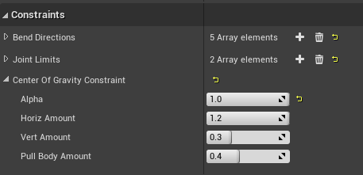

Center of Gravity Constraint
The Center of Gravity Constraint operates on the Character Root bone (typically the pelvis or hips).
It works to pull the hips back over the center of gravity when other body parts (like the head or hands) are trying to pull it off-center. This was developed for creating 3-point VR tracking rigs. But may be useful in other scenarios as well.
The center of gravity is defined as the average position of any effectors with the "Affects Center of Gravity" flag turned on.
To enable Center of Gravity:
- Add an Effector to each foot.
- Set Affects Center of Gravity on for all the foot effectors.
- In the Solver node, set the Center of Gravity Alpha value to 1.0.
- Test the setup by pulling the hips off center.

The attributes of the contraint are important for tuning the effect:
- Alpha: a global blend of the effect, 0 is off (and computation is skipped)
- Horiz Amount: this is the amount that the hips compensate in the opposite direction they are being pulled. A value of 1.0 will pin the hips (horizontally) to the center of gravity. Values greater than one will push the hip in the opposite direction which can give the impression of keeping the overall body balanced.
- Vert Amount: this is the amount that the hips are raised up when pulled down and off-center. This forces a biped into a bent-over pose instead of a crouched leaning pose. This tends to look more natural when leaning down. This has to be tuned depending on the shape of the character's body.
- Pull Body Amount: This controls how much the pelvis will pull the rest of the body back towards the center of gravity. At low values, it will yank the pelvis back while leaving the torso looking unnaturally vertical and kinked. The default value works good for humans.